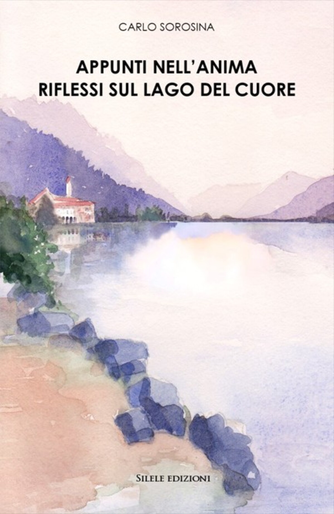

Un viaggio tra memoria, emozioni e piccoli gesti che continuano a vivere nel tempo.
Per chi conserva ricordi che il tempo non ha cancellato e sa riconoscere nei piccoli gesti qualcosa che continua a vivere.
«Ciò che il cuore dona non sarà mai perduto.»

Titolo: Appunti nell'anima. Riflessi sul lago del cuore
Autore: Carlo Sorosina
Editore: Silele Edizioni
ISBN: 978-88-3348-329-0
Pagine: 74
Prezzo di copertina: 12,00 €
Disponibile in formato cartaceo e digitale
📖 Edizione cartacea — €12,00
📱 eBook disponibile su Kindle, Google Play Libri e Apple Books → €6,99
Appunti nell'anima. Riflessi sul lago del cuore raccoglie poesie, aforismi e riflessioni dedicate alla memoria, ai legami umani e ai luoghi che continuano a vivere dentro di noi.
I testi nascono dall'osservazione della quotidianità e dei piccoli gesti che lasciano una traccia nel tempo.
Tra ricordi, silenzi e paesaggi del Lago d'Iseo, il volume accompagna il lettore in un percorso di ascolto interiore nel quale emozioni, assenze, speranze e tracce del passato diventano occasione di riflessione.
Attraverso una scrittura semplice e meditativa, Carlo Sorosina invita a rallentare e a riconoscere il valore di ciò che spesso viene considerato piccolo o ordinario, ma che continua a conservare un significato nel tempo.
Memoria · Piccoli gesti · Lago d'Iseo · Tracce del tempo
«Veramente un bel libro: accessibile e scritto con grande cura. Un'opera che fa bene al cuore e che si presta benissimo come regalo speciale.»
«La scrittura è scorrevole, limpida e mai pesante. Si legge con una facilità disarmante e lascia addosso una piacevole sensazione di calma.»
«Sono rimasto piacevolmente colpito da questo libro. Il poeta Carlo suscita in noi riflessioni sulla nostra vita passata e presente, facendoci apprezzare ogni piccolo momento della nostra quotidianità.»
«Una bella raccolta di poesie e non solo, da leggere nel tempo, parole e immagini.»
Writer Officina ha pubblicato una pagina autore dedicata a Carlo Sorosina, comprendente un'intervista sul percorso di scrittura e un estratto di Appunti nell'anima. Riflessi sul lago del cuore.
Leggi l'intervista e l'estratto →
Come uno specchio che non perde la memoria, il lago non si limita a riflettere il cielo, ma trattiene nelle sue increspature ogni soffio dell’anima.
Le emozioni non sono lacrime ferme nel tempo, ma ricordi che spinti dal vento diventano parte di una danza mossa dalle sue onde.
Chi possiede uno spirito semplice sa restare in attesa, ascoltando il battito segreto che si muove tra i suoi colori.
Perché tra queste acque silenziose, ogni frammento di vita diventa una scintilla di luce che sfida l’oblio.
Ciò che il cuore dona resta come un segno sull’acqua, anche quando il lago torna immobile.
Piccoli gesti, grandi tracce.
Se queste pagine hanno fatto riaffiorare un ricordo, un luogo o un'emozione, puoi continuare la lettura scegliendo il formato che preferisci.
Scrittore dei piccoli gesti, della memoria e delle tracce che il tempo lascia nelle persone e nei luoghi.